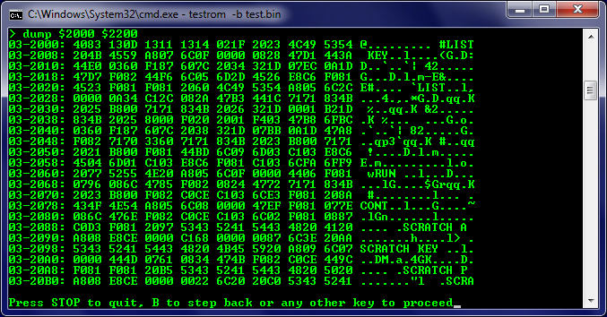

内存转储 / Memory Dump
- 开发新软件或追踪错误时使用 / Used when developing new software or tracing errors
- 内存转储是将内存内容输出到打印机或显示器 / Memory dump outputs memory contents to printer or monitor
- 以十六进制格式显示内存内容 / Memory contents displayed in hexadecimal format
实际示例 / Practical Example
- 内存地址: 0x2000 / Memory address: 0x2000
- 内存内容: 4A 6F 68 6E / Memory content: 4A 6F 68 6E
- 错误地址: 0xC0000005 / Error address: 0xC0000005

调试 / Debugging
- 查找程序中错误的方法 / Method to find errors in programs
- 显示错误代码(数字指向错误的内存位置) / Display error codes (numbers point to error memory location)
- 错误地址通常以十六进制形式显示 / Error addresses usually displayed in hexadecimal format
优势 / Advantages
- 紧凑的数据表示 / Compact data representation
- 便于程序员阅读和分析 / Easy for programmers to read and analyze
- 标准化的调试格式 / Standardized debugging format